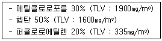
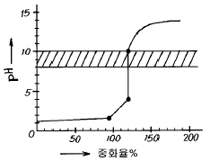
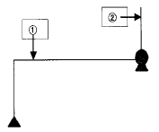
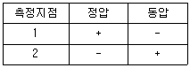
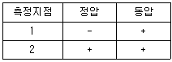
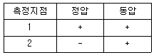
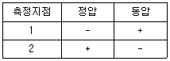

산업위생관리산업기사 (2002-08-11 기출문제)
1과목: 산업위생학 개론
1. 암모니아 중독에 효과가 있다고 알려진 영양소로 알맞는 것은?
- 비타민 C
- 비타민 B1
- 비타민 B2
- 비타민 E
(정답률: 57%)

2. 우리나라에서 산업위생에 관한 최초의 법령이라 볼 수 있는 것은?
- 산업안전보건법
- 작업환경측정법
- 근로기준법
- 산업보건기본법
(정답률: 80%)
3. 적절한 직업을 찾기위한 적성검사의 종류와 거리가 먼것은?
- 신체검사
- 생리기능검사
- 임상적검사
- 심리학적검사
(정답률: 80%)
4. 다음 중 피로의 예방대책과 가장 거리가 먼 것은?
- 정적작업으로 바꾼다.
- 개인마다 작업량을 조절한다.
- 작업과정에 적절한 간격으로 휴식시간을 둔다.
- 작업환경을 정비,정돈한다.
(정답률: 90%)
5. 산업피로 판정시 생화학적 검사항목인 것은?
- 혈액, 뇨단백
- 근력,근활동
- 대뇌피질 활동
- 호흡순환기능
(정답률: 알수없음)
6. 허용농도(TLV) 적용상 주의할 내용으로 틀린 것은?
- 산업장의 유해조건을 평가하고 개선하기 위한 지침으로만 사용되어야 한다.
- 산업위생전문가에 의하여 적용되어야 한다.
- 24시간 노출 또는 정상 작업시간을 초과한 노출에 대한 독성 평가에는 적용될 수 없다.
- 대기오염평가 및 관리에 적용될 수 없으며 단순히 독성의 강도를 비교 평가할 수 있는 기준이다.
(정답률: 알수없음)
7. 인간공학 활용시에는 3단계를 거쳐야 되는데 선택 단계에서 중요시하는 내용은?
- 인간과 기계 관계의 구성인자간 특성
- 인간과 기계가 각기 해야할 일
- 인간과 기계 관계의 실험적 검토
- 작업수행에 필요한 직종간의 연결성
(정답률: 58%)
8. 강도율을 알맞게 나타낸 것은?
- (일정기간의 재해건수/일정기간중 연근로시간수) × 1,000,000
- (일정기간의 재해건수/일정기간의 평균종업원수) × 1,000
- (일정기간중 근로손실일수/일정기간중 연근로시간수) × 1,000
- (일정기간중 재해건수/일정기간의 평균종업원수) × 1,000,000
(정답률: 알수없음)
9. 작업강도와 그에 따른 작업대사율의 범위가 알맞게 짝지어진 것은?
- 경작업 : 0 ~ 2
- 격심작업 : 4 ~ 7
- 중작업 : 2 ~ 4
- 중등작업 : 1 ~ 2
(정답률: 알수없음)
10. 바람직한 교대제에 대한 설명으로 알맞지 않는 것은?
- 각 반의 근무시간은 8시간씩으로 한다.
- 야근 후 다음 반으로 가는 간격은 최저 48시간을 가지도록 한다.
- 야근근무의 연속은 일주일(5-7일)정도가 좋다.
- 2교대면 최저 3조의 정원을 그리고 3교대면 4조 편성으로 한다.
(정답률: 84%)
11. 레이노씨 현상(Raynaud's Phenonmenon)을 악화시키는 중요한 요소는?
- 고열
- 한냉
- 영양
- 소음
(정답률: 87%)
12. 굴뚝 검댕과 음낭암의 관계를 밝혀내어 '굴뚝청소부법'을 제정토록한 사람은?
- Alice Hamilton
- Galen
- Percivall Pott
- Ramazzini
(정답률: 72%)
13. 에너지 대사율(Relative Metabolic Rate )를 알맞게 나타낸 것은?
- 작업에 소요된 열량 / 기초대사량
- 기초대사량 / 작업대사량
- 작업대사량 / 기초대사량
- 기초대사량 / 작업에 소요된 열량
(정답률: 73%)
14. 다음 중 직업성 피부질환에 영향을 주는 간접적 요인과 가장 거리가 먼 것은?
- 땀
- 인종
- 성별
- 피부의 종류
(정답률: 알수없음)
15. 납중독의 증상이 아닌 것은?
- 말초신경염이나 손처짐등을 포함한 신경근육계통의 장해
- Coproporphyrin뇨
- 망상적혈구와 친염기성 점적혈구의 증가
- 마뇨산 생성 및 배설
(정답률: 75%)
16. 다음 중 작업강도의 일반적인 평가 기준은?
- 혈당치변화량
- 작업시간 및 밀도
- 소비산소량
- 열량소비량
(정답률: 알수없음)
17. 산업피로의 증상 중에서 틀린 것은?
- 소변의 단백질 또는 교질물질의 배설량이 증가한다.
- 혈액내에 혈당치, 젖산량이 높아진다.
- 권태감, 졸음이 온다.
- 체온 조절기능이 저하된다.
(정답률: 67%)
18. 당뇨증이 있는 작업자에게 문제되는 작업은?
- 외상 받기 쉬운작업
- 고열작업
- 유해가스작업
- 정신적 긴장작업
(정답률: 55%)
19. 규폐증은 공기 중 분진내에 어느 물질이 함유되어 있을 때 발생하는가?
- 유리규산
- 석면
- 탄소가루
- 크롬
(정답률: 64%)
20. 고압환경에서 생기는 잠함병(Caisson disease)의 주된 원인이 되는 물질은?
- 산소(O2)
- 이산화탄소(CO2)
- 일산화탄소(CO)
- 질소(N2)
(정답률: 59%)
2과목: 작업환경측정 및 평가
21. 공기중의 유해물질,분진등을 측정시 시료를 채취하지 않고 측정 오차를 보정하기 위하여 사용하는 시료를 무엇이라 하는가?
- filter sample
- blank sample
- random sample
- mean sample
(정답률: 알수없음)
22. 음력이 0.1W의 작은 점음원으로 부터 100m 떨어진 곳의 음압레벨(SPL : dB)은? (단, SPL=PWL-20logr-11)
- 약 30
- 약 40
- 약 50
- 약 60
(정답률: 46%)
23. 0.001N - NaOH 수용액 중에 있는 [H+]는?
- 1 × 10-3㏖/ℓ
- 1 × 10-13㏖/ℓ
- 1 × 10-11㏖/ℓ
- 1 × 10-5㏖/ℓ
(정답률: 40%)
24. 실리카겔에 포집된 극성의 유기용제를 가장 쉽게 탈착시키는 물질은?
- 증류수
- 이황화탄소
- 메틸렌클로라이드
- 클로로포름
(정답률: 50%)
25. 어떤 시점에서 수치를 넘어서는 안된다는 상한치를 뜻하는 것으로 항상 표시된 농도이하를 유지해야 할 때 물질 앞에 표시하는 기호는?
- TWA
- STEL
- C
- TLV
(정답률: 알수없음)
26. 분진발생 작업장에서 2.5ℓ /min의 유량으로 5시간 시료를 포집하고 시료채취 전ㆍ후의 여과지 무게를 측정한 결과 각각 0.0721g과 0.0742g이었다. 분진농도는?
- 2.4㎎/m3
- 2.8㎎/m3
- 3.4㎎/m3
- 3.8㎎/m3
(정답률: 67%)
27. 어떤 한공정에서 연속해서 30분동안 소음을 측정한 결과 소음레벨이 65㏈(A) (14분), 70㏈(A) (10분), 75㏈(A) (4분), 80㏈(A) (2분)이 되었다. 이 지점의 등가소음레벨은 몇 ㏈(A)인가?
- 79
- 75
- 72
- 70
(정답률: 46%)
28. 펌프의 유량을 보정하는데 가장 널리 사용되는 '1차표준' 장비는?
- spirometer
- pitot tube
- soap bubble meter
- rota meter
(정답률: 59%)
29. 혼합유기용제의 구성비(중량비)는 다음 보기와 같았다. 이 혼합물의 허용농도(TLV)는?

- 837 ㎎/m3
- 887 ㎎/m3
- 937 ㎎/m3
- 987 ㎎/m3
(정답률: 40%)
30. 비흡습성이므로 먼지의 중량 분석에 적절하며 특히 유리 규산을 채취하여 X선회절법으로 분석하는데 적절한 여과지는?
- MCE여과지
- 유리섬유여과지
- PVC막여과지
- 은막여과지
(정답률: 54%)
31. 0.1N - K2Cr2O7(분자량 294.18) 500㎖을 만들 때 K2Cr2O7의 필요량은 얼마인가?
- 2.45g
- 4.90g
- 7.35g
- 14.7g
(정답률: 19%)
32. 일정한 물질에 대해 반복 측정ㆍ분석을 했을 때 자료분석치의 변동크기가 얼마나 작은가를 나타내는 용어는?
- 정확도
- 참값
- 정밀도
- 대표값
(정답률: 50%)
33. 작업환경 공기 중의 헵타논(TLV 50ppm)이 20ppm이고, 트리클로로에틸렌(TLV 50ppm)이 10ppm이며, 테트라클로로에틸렌(TLV 50ppm)이 25ppm이다. 이러한 공기의 복합노출지수는? (단, 각 물질은 상가작용을 일으킨다)
- 0.9
- 1.0
- 1.1
- 1.2
(정답률: 77%)
34. 증류수 500㎖속에 순수한 H2SO4가 24.5g 용해되어 있다면 몇 M용액인가? (단, 황의 원자량은 : 32 )
- 0.1M
- 0.3M
- 0.5M
- 0.7M
(정답률: 알수없음)
35. 어느 작업장의 SO2 측정 농도가 5ppm이었다. 이를 ㎎/m3 단위로 환산하면? (단, 원자량 S=32, O=16, 온도 25℃, 기압 750㎜Hg)
- 11.2
- 12.9
- 13.5
- 14.2
(정답률: 30%)
36. 액체 포집 방법의 시료 포집 원리가 아닌 것은?
- 용해
- 흡착
- 흡수
- 반응
(정답률: 34%)
37. 아래 도면의 사선으로 표시된 범위에 사용되는(산,염기) 지시약은?

- 메틸오렌지
- 메틸 레드
- 페놀프탈레인
- 페닐블루
(정답률: 알수없음)
38. 원자흡광광도계의 주요 구성요소가 아닌 것은?
- Hollow Cathode Lamp
- Atomizer
- Premix burner
- Electron Capture Detector
(정답률: 50%)
39. 진동이란 전신진동과 국소진동으로 구분하는데 진동의 크기를 나타내는 3가지 요소가 아닌 것은?
- 변위(displacement)
- 속도(velocity)
- 공명(resonance)
- 가속도(acceleration)
(정답률: 58%)
40. 활성탄관(흡착)을 사용하여 채취하기 용이한 시료가 아닌것은?
- 방향족 유기용제
- 비극성류의 유기용제
- 지방족아민류
- 알코올류
(정답률: 50%)
3과목: 작업환경관리
41. 한냉작업장에서 취해야 할 개인 위생상 준수해야할 사항들이 많다. 다음중 이에 해당되지 않는 내용은?
- 팔다리 운동으로 혈액순환 촉진
- 약간 큰 장갑과 방한화의 착용
- 건조한 양말의 착용
- 적절한 식염수의 섭취
(정답률: 65%)
42. 다음의 화학적 유해요인중 자극성 가스로 보기 어려운 것은?
- 염소(Cl2)
- 불소(F2)
- 암모니아(NH3)
- 일산화탄소(CO)
(정답률: 28%)
43. Allergy성 접촉피부염의 진단에 가장 유용한 방법은?
- 면역글로부린 검사
- 조직검사
- 첩포검사
- 일반혈액검사
(정답률: 알수없음)
44. 귀덮개에 대한 설명으로 틀린 것은?
- 귀마개보다 차음효과는 작지만 개인차가 적고 보호구 착용여부가 쉽게 확인된다.
- 귀마개보다 쉽게 착용할 수 있고 착용법이 틀리거나 잃어 버리는 일이 적다.
- 귀에 질병이 있을때도 사용이 가능하다.
- 크기를 여러가지로 할 필요없다.
(정답률: 40%)
45. 열경련에 관한 설명으로 알맞지 않은 것은?
- 단시간의 급속한 고온환경 폭로후에 일시적으로 오는 생체작용이다.
- 체온이 상승하고 혈중 Cl-이온 농도가 현저히 감소한다.
- 일시적으로 단백뇨가 나온다.
- 복부와 사지 근육에 강직, 동통이 일어난다.
(정답률: 알수없음)
46. 유해화학물질이 체내로 침투되어 해독되는 경우 해독반응에 가장 중요한 작용을 하는 것은?
- 적혈구
- 효소
- 림프
- 백혈구
(정답률: 70%)
47. 환경개선에 관한 다음의 기술중 잘못된 것은?
- 분진작업에는 습식으로 하는 방법의 고려가 필요함.
- 유기용제를 사용하는 경우에는 가능한한 휘발성이 적은 물질로 대체함
- 제진장치의 선정에 있어서는 함유분진의 입경 분포를 고려함
- 전체환기장치의 경우 공기의 입구와 출구를 근접한 위치에 설치하여 환기효과를 증대함
(정답률: 47%)
48. 방사성 동위원소의 붕괴과정 중에서 원자핵에서 방출되는 입자로서 투과력은 가장 약하나 전리작용은 가장 강하며, 투과력이 약하기 때문에 외부조사로 건강상의 위해가 오는 일은 드물지만, 동위 원소를 흡입, 섭취할때의 내부조사로 심한 위해를 일으키는 전리방사선은?
- 중성자
- x선
- α 선
- β 선
(정답률: 25%)
49. 흡입분진의 종류에 따른 진폐증의 분류를 아래에 적었다. 유기성 분진에 의한 진폐증을 고르면?
- 농부폐증
- 용접공폐증
- 탄소폐증
- 규폐증
(정답률: 70%)
50. 다음중 고압환경에 폭로될 때 4기압이상의 공기중 질소가스에 의해 마취작용을 나타내는 질환은?
- 다행증
- 산소중독
- 잠함병
- 동통성 관절장해
(정답률: 알수없음)
51. 한냉 환경에서 일어나는 제2도 동상의 증상으로 가장 적절한 것은?
- 수포를 가진 광범위한 삼출성 염증이 일어난다.
- 따갑고 가려운 감각이 생기고 혈관이 확장하여 발적이 생긴다.
- 심부조직까지 동결하면 창백하고 조직의 괴사와 괴저가 일어난다.
- 피부가 동결하면 창백하고 감각이 둔해지며 황백색으로 변한다.
(정답률: 64%)
52. 국소진동의 경우에 주로 문제가 되는 주파수 범위로 가장 알맞는 것은?
- 2 ~ 100 Hz
- 8 ~ 1500 Hz
- 1000 ~ 4000 Hz
- 4000 ~ 6000 Hz
(정답률: 50%)
53. 폐결핵과 가장 밀접한 관계가 있는 진폐증으로 가장 많이 발견되는 질병은?
- 규폐증
- 면폐증
- 농부폐증
- 석면폐증
(정답률: 알수없음)
54. 재질이 일정하지 않고 균일하지 않아 정확한 설계가 곤란 하며 처짐을 크게 할 수 없어 진동방지라기 보다는 고체음의 전파방지에 유익한 방진재료는?
- 방진고무
- 공기용수철
- 코르크
- 금속코일용수철
(정답률: 80%)
55. 총분진의 허용농도를 제1종, 제2종, 제3종 분진으로 나누는데 대표적인 기준 물질은?
- 산화철(FeO)
- 유리규산(SiO2)
- 실리콘(Silicon)
- 석면(Asbestos)
(정답률: 64%)
56. 다음의 작업환경 개선대책중 대치의 방법이 아닌 것은?
- 물질의 변경
- 사람의 변경
- 시설의 변경
- 공정의 변경
(정답률: 72%)
57. 유해 광선중 3200 ∼ 3800Å 파장에서 상피층 즉 각화층과 말피기층(malpighian layer)에서 흡수되며 피부에 홍반작용과 색소침착을 일으키는 광선은?
- 자외선
- 적외선
- 레이저광선
- 마이크로파
(정답률: 77%)
58. 직접적인 마취작용은 없으나 체내에서 가수분해하여 2차적으로 마취작용을 내는 화학물질은?
- 에스테르류
- 파라핀계탄화수소
- 이소프로필에테르
- 아세틸렌계탄화수소
(정답률: 알수없음)
59. 가시광선의 조명부족에 의한 피해증상이라고 할 수 없는 것은?
- 안정피로
- 안구진탕증
- 녹내장
- 눈의 피로
(정답률: 46%)
60. 잠수부가 수심 20m인 곳에서 작업하는 경우 이 근로자에게 작용하는 절대압은?
- 2기압
- 3기압
- 4기압
- 5기압
(정답률: 73%)
4과목: 산업환기
61. 송풍기 설계시 주의사항으로 적합치 아니한 것은?
- 송풍량과 송풍압력을 완전히 만족시켜 예상되는 풍량의 변동범위내에서 과부하하지 않고 완전한 운전이 되도록 한다.
- 송풍관의 중량을 송풍기에 가중시키지 않는다.
- 송풍배기의 입자농도와 그 마모성을 참작하여 송풍기의 형식과 내마모구조를 고려한다.
- 송풍기와 배관간에 Flexible bypass를 설치하여 송풍압력의 변동을 감소시킨다.
(정답률: 알수없음)
62. 산업환기시스템 점검시 피토관을 이용하여 그림과 같은 측정지점(송풍기앞과 뒤)에서 정압과 동압을 측정하였다. 정압과 동압 정값의 부호(+ 혹은 -)를 바르게 표기한 것은?





(정답률: 28%)
63. 톨루엔은 0℃일 때 증기압이 6.8mmHg이고 25℃일 때는 증기압이 28.4mmHg이다. 기온이 0℃일 때와 25℃인 경우의 포화농도 차이는?
- 약 28,400ppm
- 약 36,400ppm
- 약 42,100ppm
- 약 50,200ppm
(정답률: 알수없음)
64. 후드 개구면 속도를 균일하게 분포시키는 방법이 아닌것은?
- 테이퍼 부착
- 분리날개 설치
- 차폐막 사용
- 개구면적의 최소화
(정답률: 36%)
65. 1600℃이고 직경이 1.5m 인 원형 열처리로 상방에 캐노피형(레시바식)후드를 설치하고자 한다. 캐노피형 후드의 높이를 0.9m로 할 때 후드 개구면의 직경은?
- 2.18m
- 2.22m
- 2.40m
- 3.31m
(정답률: 19%)
66. 사이크론 제진장치에 있어서 중요한 것은 사이크론 입구의 유속이 된다. 다음중 적당한 유입유속(m/sec)범위는? (단, 접선 유입식 기준이며 원통상부에서 접선방향)
- 1.5 ~ 5.0
- 5.0 ~ 10
- 7 ~ 15
- 20 ~ 30
(정답률: 48%)
67. 수증기 발생시 필요 환기량을 구하는 식은? (단, Q(m3/hr) : 필요환기량, Hs(㎉/hr) : 열부하, W(㎏/hr) : 수증기 부하량, △G(㎏/㎏건기) : 급배기의 절대습도차, △t=급배기의 온도차)
- Q = Hs / 0.3Δ t
- Q = Hs / 1.2Δ t
- Q = W / 0.3Δ G
- Q = W / 1.2Δ G
(정답률: 알수없음)
68. 국소 배기의 압력을 나타내는 수주(㎜H2O)는 대기의 기압(760㎜Hg)을 기준으로하여 표현한다. 대기 1기압에서 수주는?
- 10336㎜H20
- 10421㎜H20
- 1⑤12㎜H20
- 10621㎜H20
(정답률: 39%)
69. 후드의 유입 계수가 0.7이고 속도압(동압)이 20mmH20라면 압력손실은?
- 약 10 mmH2O
- 약 15 mmH2O
- 약 20 mmH2O
- 약 35 mmH2O
(정답률: 알수없음)
70. 용해로가 있는 작업장에 환기를 위해 자연환기를 실시하고자 한다. 작업장 상부에 자연환기구가 설치되어 있고, 창문은 항상 열려있다면, 다음 중 가장 높은 환기효율을 기대할 수 있는 계절은? (단, 풍속 및 풍향은 동일하다고 가정)
- 봄
- 여름
- 가을
- 겨울
(정답률: 알수없음)
71. 폭발농도 하한치(lower explosive limit,LEL)가 25%이면 화재나 폭발을 예방하기 위해서는 기중 농도가 몇 ppm이하로 유지되어야 하는가? (단, 안전계수는 고려하지 않는다)
- 25,000 ppm 이하
- 25,000 ppm 이상
- 250,000 ppm 이하
- 250,000 ppm 이상
(정답률: 알수없음)
72. 주관에 45° 로 분지관이 연결되어 있다. 주관입구와 분지관의 속도압은 10㎜H2O로 같고 압력손실계수는 각각 0.2와 0.28이다. 주관과 분지관의 합류로 인한 압력손실은?
- 약 3㎜H2O
- 약 5㎜H2O
- 약 7㎜H2O
- 약 9㎜H2O
(정답률: 50%)
73. 다음은 관내기류의 단위체적당 유체에 작용하는 힘 즉 압력을 설명한 것이다. 잘못된 것은?
- 압력은 정압, 동압 및 전압 3종류로 구분된다.
- 전압은 단위 유체에 작용하는 정압과 동압의 총합이다.
- 동압을 때로는 저항압력 또는 마찰압력 이라고도 한다.
- 정압은 단위체적의 유체가 갖는 에너지로서 유체 부분에 압축작용을 한다.
(정답률: 알수없음)
74. Hood의 길이가 1.25m, 폭이 0.25m 인 외부식 슬롯형후드를 설치하고자 한다. 포집점과의 거리가 1.0m, 포집 속도는 0.5m/sec 일 때 송풍량은? (단, 플랜지가 없으며 공간에 위치하고 있음)
- 약 80 m3/min
- 약 100 m3/min
- 약 120 m3/min
- 약 140 m3/min
(정답률: 알수없음)
75. 송풍기 압이 100mmH2O이다. 이때 풍량은 150m3/min, 효율은 0.7일 때 소요동력(KW)은?
- 3.5
- 4.0
- 3.0
- 4.5
(정답률: 34%)
76. 유해가스 처리법중 회수가치가 있는 불연성 희박농도가스의 처리에 가장 적합한 것은?
- 촉매 산화법
- 연소법
- 흡수법
- 흡착법
(정답률: 20%)
77. 어떤 공장에서 1시간에 2ℓ 의 메틸 에틸 케톤이 증발되어 공기를 오염시키고 있다. K치는 6, 분자량은 72.06, 비중은 0.8⑤ 이며 허용기준 TLV는 200ppm이라면 이 작업장을 전체환기 시키기 위한 필요환기량(m3/min)은?
- 146
- 189
- 214
- 272
(정답률: 50%)
78. 유기용제를 취급하는 국소환기 시설에서 송풍관의 재질로 가장 적당한 것은?
- 스텐레스 강판
- 흑피 강판
- 아연도금 강판
- 중질 콘크리트
(정답률: 40%)
79. 시멘트, 미분탄, 곡물, 모래 등의 고농도 분진이나 마모성이 강한 분진 이송용으로 일반적으로 사용되는 원심력 송풍기는?
- 프로펠러 송풍기
- 전향 날개형 송풍기
- 후향 날개형 송풍기
- 방사 날개형 송풍기
(정답률: 34%)
80. 분진 및 유해화학 물질이 발생되는 작업장에 설치하는 국소 배기장치 후드의 설치상 기본 유의사항으로 알맞지 않는 것은?
- 발산원의 상태에 맞는 형과 크기일 것
- 발산원 부근에 최소 반송속도를 만족하는 정상기류를 만들 것
- 작업자가 후드에 흡인되는 오염기류내에 들어가거나 폭로되지 않도록 배치할 것
- 오염물질을 효과적으로 제거할 수 있는 공기정화장치를 설치할 것
(정답률: 알수없음)